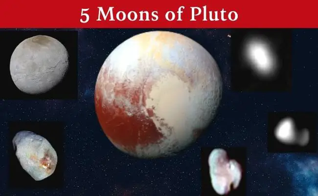
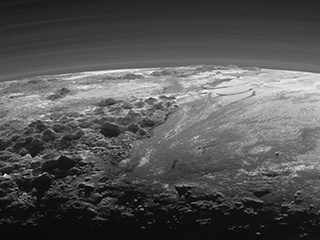

Pluto is a complex and mysterious world with mountains, valleys, plains, craters, and maybe glaciers. Discovered in 1930, Pluto was long considered our solar system's ninth planet. But after the discovery of similar intriguing worlds deeper in the distant Kuiper Belt, icy Pluto was reclassified as a dwarf planet.
Pluto is only about 1,400 miles wide. At that small size, Pluto is only about half the width of the United States. It's about 3.6 billion miles away from the Sun, and it has a thin atmosphere composed mostly of nitrogen, methane, and carbon monoxide. On average, Pluto’s temperature is -387°F (-232°C), making it too cold to sustain life. Pluto is orbited by five known moons, the largest of which is Charon. Charon is about half the size of Pluto itself, making it the largest satellite relative to the planet it orbits in our solar system. Pluto and Charon are often referred to as a "double planet."
Size and Distance
With a radius of 715 miles (1,151 kilometers), Pluto is about 1/6 the width of Earth. If Earth was the size of a nickel, Pluto would be about as big as a popcorn kernel. From an average distance of 3.7 billion miles (5.9 billion kilometers), Pluto is 39 astronomical units away from the Sun. One astronomical unit (abbreviated as AU), is the distance from the Sun to Earth. From this distance, it takes sunlight 5.5 hours to travel from the Sun to Pluto.
If you were to stand on the surface of Pluto at noon, the Sun would be 1/900 the brightness it is here on Earth, or about 300 times as bright as our full moon. There is a moment each day near sunset here on Earth when the light is the same brightness as midday on Pluto. Find out when you can experience "Pluto time" where you live.
Orbit and Rotation
Pluto's orbit around the Sun is unusual compared to the planets: it's both elliptical and tilted. Pluto's 248-year-long, oval-shaped orbit can take it as far as 49.3 astronomical units (AU) from the Sun, and as close as 30 AU. (One AU is the mean distance between Earth and the Sun: about 93 million miles or 150 million kilometers.) But on average, Pluto is 3.7 billion miles (5.9 billion kilometers) away from the Sun, or 39 AU.

From 1979 to 1999, Pluto was near perihelion, when it is closest to the Sun. During this time, Pluto was actually closer to the Sun than Neptune. One day on Pluto takes about 153 hours. Its axis of rotation is tilted 57 degrees with respect to the plane of its orbit around the Sun, so it spins almost on its side. Pluto also exhibits a retrograde rotation; spinning from east to west like Venus and Uranus.
Moons: Pluto has five known moons: Charon, Nix, Hydra, Kerberos, and Styx. This moon system might have formed by a collision between Pluto and another similar-sized body early in the history of the solar system. Charon, the biggest of Pluto's moons, is about half the size of Pluto itself, making it the largest satellite relative to the planet it orbits in our solar system. It orbits Pluto at a distance of just 12,200 miles (19,640 kilometers). For comparison, our Moon is 20 times farther away from Earth. Pluto and Charon are often referred to as a double planet.

Charon's orbit around Pluto takes 153 hours – the same time it takes Pluto to complete one rotation. This means Charon neither rises nor sets, but hovers over the same spot on Pluto's surface. The same side of Charon always faces Pluto, a state called tidal locking. Pluto's other four moons are much smaller, less than 100 miles (160 kilometers) wide. They're also irregularly shaped, not spherical like Charon. Unlike many other moons in the solar system, these moons are not tidally locked to Pluto. They all spin and don’t keep the same face towards Pluto.
Rings: There are no known rings around Pluto.
Formation: Dwarf planet Pluto is a member of a group of objects that orbit in a disc-like zone beyond the orbit of Neptune called the Kuiper Belt. This distant realm is populated with thousands of miniature icy worlds, which formed early in the history of our solar system about 4.5 billion years ago. These icy, rocky bodies are called Kuiper Belt objects, transneptunian objects, or plutoids.
Structure: Pluto is about two-thirds the diameter of Earth's Moon and probably has a rocky core surrounded by a mantle of water ice. Interesting ices like methane and nitrogen frost coat the surface. Due to its lower density, Pluto's mass is about one-sixth that of Earth's Moon.
Surface:

Pluto's surface is characterized by mountains, valleys, plains, and craters. The temperature on Pluto can be as cold as -375 to -400 degrees Fahrenheit (-226 to -240 degrees Celsius). Pluto's tallest mountains are 6,500 to 9,800 feet (2 to 3 kilometers) in height. The mountains are big blocks of water ice, sometimes with a coating of frozen gases like methane. Long troughs and valleys as long as 370 miles (600 kilometers) add to the interesting features of this faraway dwarf planet.
Craters as large as 162 miles (260 kilometers) in diameter dot some of the landscape on Pluto, with some showing signs of erosion and filling. This suggests tectonic forces are slowly resurfacing Pluto. The most prominent plains observed on Pluto appear to be made of frozen nitrogen gas and show no craters. These plains do show structures suggesting convection (blobs of material circulating up and down).
Atmosphere: Pluto has a thin, tenuous atmosphere that expands when it comes closer to the Sun and collapses as it moves farther away – similar to a comet. The main constituent is molecular nitrogen, though molecules of methane and carbon monoxide have also been detected. When Pluto is close to the Sun, its surface ices sublimate (changing directly from solid to gas) and rise to temporarily form a thin atmosphere. Pluto's low gravity (about 6% of Earth's) causes the atmosphere to be much more extended in altitude than our planet's atmosphere. Pluto becomes much colder during the part of each year when it is traveling far away from the Sun. During this time, the bulk of the planet's atmosphere may freeze and fall as snow to the surface.
Magnetosphere: It isn't known whether Pluto has a magnetic field, but its small size and slow rotation suggest little or none.